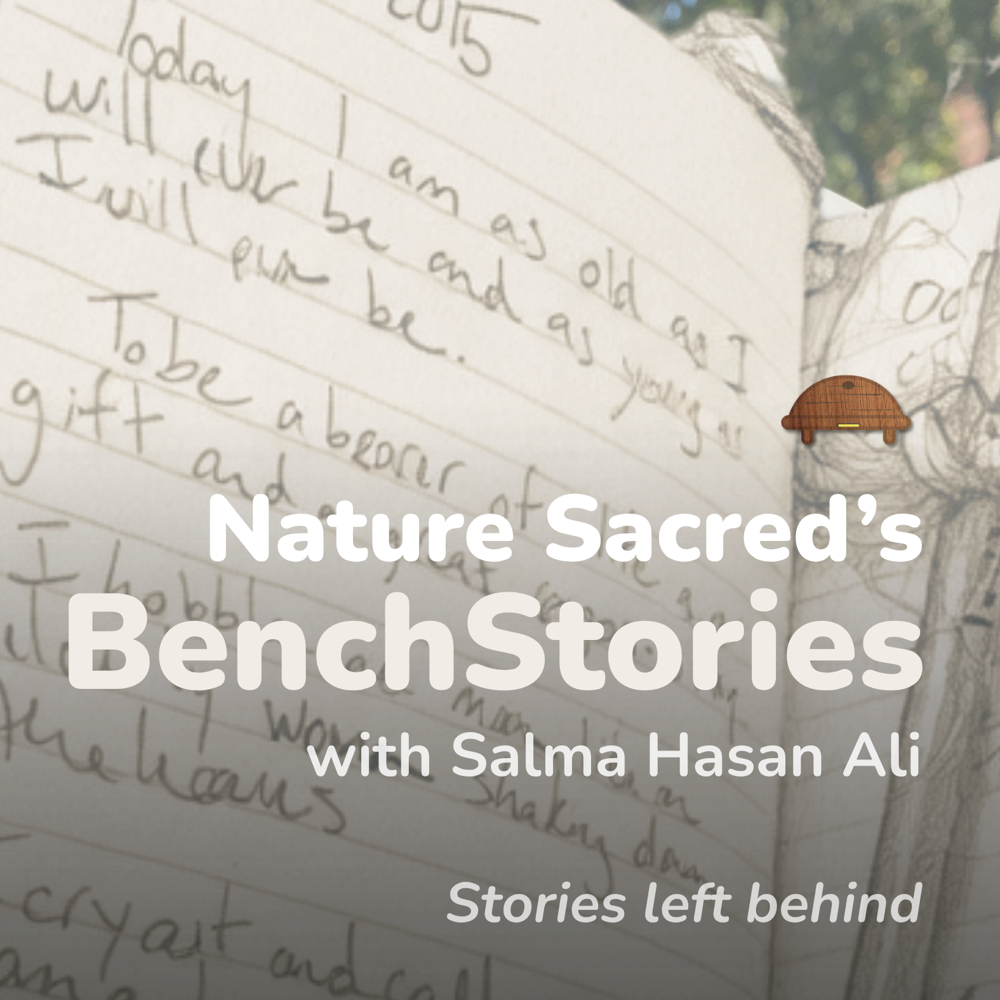
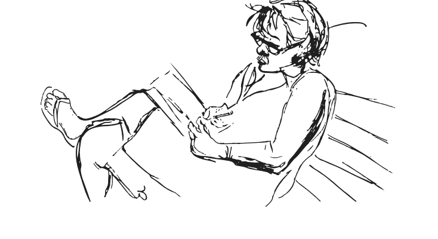

{{ ep.label }}
{{ ep.season }}
{{ ep.length }}
{{ ep.title }}
{{ ep.blurb }}
{{ ep.note }}
{{ ep.pos }}
{{ ep.dur }}


Across the country, in contemplative green spaces known as Sacred Places, little waterproof yellow journals sit tucked under benches. People write in them. Not because anyone asked them to, but because something happens when you sit quietly in nature, even for a minute.
Twelve episodes. Four quarterly releases in 2026. A year of listening.
{{ ep.blurb }}
{{ ep.note }}
{{ l.quote }}
For more than 30 years, these journals have been filled with thousands of entries. Words about love. About encouragement. About pain and loss. About what it feels like to finally sit still, to just be, and to look around.
BenchStories brings those words to life, hosted by Salma Hasan Ali, editor of Nature Sacred's BenchTalk: Wisdoms Inspired in Nature. Her voice is at the same time soothing and utterly immersive. Each episode runs about three to five minutes: the entries, what she hears in them, and some space to breathe.
Salma Hasan Ali is a Washington, D.C.,-based writer and storyteller. She is the editor of Nature Sacred's BenchTalk: Wisdoms Inspired in Nature, a curated collection of journal entries from Sacred Places across the country, and the author of 30 Days: Stories of Gratitude, Traditions, and Wisdom. Her work has appeared in The Washington Post, the Washingtonian, and NPR's Morning Edition. You can follow Salma's stories through her humanKIND newsletter available through her website.
Follow BenchStories on your platform of choice to get each new episode. Our newsletter covers all of Nature Sacred's work, new episodes included.